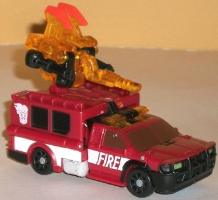

Chopster
Chopster
Allegiance : Minicon
Difficulty of Transformations : Very Easy
Color Scheme : Transparent light orange, black, and some light orange
Individual Rating : 5.2
Smolder
w/ Chopster
Chopster
Allegiance
: Minicon
Difficulty of Transformations
: Very
Easy
Color Scheme
: Transparent light
orange, black, and some light orange
Individual Rating
: 5.2
Chopster's robot mode
is a bit of an odd one for a Minicon, but that's not necessarily a bad
thing. The arms end in chain guns, while his feet are formed from his axe-blades.
It doesn't sound that great, but it works surprisingly well-- the arms
give Chopster some weaponry even in his individual robot mode, and the
axe blades actually do look like very flattened, curled "elf shoes". (That
said, I do wish hands were molded on the inside of his chain-guns.) The
face on him is also very odd, being made of two telescope-like optics,
one of which is MUCH larger than the other. Needless to say I don't think
Chopster would be very comfortable at Minicon social gatherings, but it's
still a very unique design that makes him stand out from the crowd. The
only real "extra" in this mode is the handle behind his back, and that's
no biggie. The transparent orange-and-black color scheme works well with
Smolder's fiery color combo, and even by itself under the right light looks
like he's a "tool made of fire". As for articulation, he can move at the
shoulders, hips, and ankles, and the former two are on ball joints. So
he has decent movement, but he could really use some elbows.
Chopster's weapon modes
are also surprisingly good considering he also has a decent robot mode--
though like pretty much every other Power Core Combiner Minicons, they're
still just fairly obviously his robot mode limbs in yoga positions around
in main body. His vehicle weapon mode has his rotary guns pointed forward
along with his "handle", which doubles as a gun in this mode, while the
axe blade halves stay out of the way. Given that Chopster's Powerlinx port
is on his stomach, this works quite well with many Power Core vehicles,
and Smolder's certainly no exception. His robot weapon mode is, as his
name implies, an axe. This one isn't quite as good as his other weapon
mode, because his rotary gun-hands just sorta droop down in the center
of the mode, but the axe blade-feet definitely bring to mind an axe pretty
quickly, as opposed to being a stretch like many Power Core Minicon weapon
modes.
His torso armor mode
actually can add a bit more "flair" to the torso of most Power Core Combiners,
with some nice crests made out of his axe-feet (which stick out the farthest),
and the handle folded down looks good in conjunction with the chaingun-arms
that are folded up to form the "bulk" of the armor mode. Although still
simple-- and just barely different from his robot weapon mode-- it's one
of my favorite armor modes of any Power Core Minicon.
Overall, Chopster is
definitely one of the better (and more unique) Power Core Minicons. Yeah
his transformations are still overly simple, but his robot mode, vehicle
weapon mode, and chest armor mode are all quite good, his color fits his
"master's" pretty well, and even his poorest mode-- his robot weapon mode--
is still a passable axe.
 Smolder
Smolder

Allegiance
: Decepticon
Difficulty of Vehicle/Robot Transformation
:
Easy
Difficulty of Torso Transformation
:
Easy
Color Scheme
: Black, moderately
dark red, and some transparent light orange, light sky blue, dull glossy
brown, white, pasty off-white, pale metallic yellow, and dull metallic
bronze
Individual Rating
: 8.8
Smolder (COOL name, by
the way) has the vehicle mode of a brush truck. The proportions are quite
good-- particularly for a Power Core Combiner-- and there's almost no robot
mode extras. (The sole exception to this is that if you look at Smolder
from the rear, you can see his robot head in fairly plain view, as he has
no real "backside" to his vehicle mode.) Smolder is very compressed in
this mode, though, so he does look surprisingly tiny for a Power Core Combiner
here, with even a Minicon looking not so "mini" next to him. The colors
fit quite well for a brush truck, with red and black being the primary
colors, and white being one of the main contrast colors. It's nice that
they decided to diversify the color scheme a bit more from the primary
"emergency vehicle" colors, though-- the dull brown windows are a nice
touch, like smoke residue has discolored them. The sirens are also a nice
shade of transparent orange-- I really have no qualms about Smolder's color
scheme at all. I wish the top rear half of the vehicle mode had some paint
for all those cool mold details up there, but otherwise his paint apps
are spread pretty evenly over his surface to prevent any part from looking
too monotonous., like the "FIRE" emblems amidst the stripes along the side
of the vehicle. I also particularly love the Decepticon symbols on fire
on the sides-- nice touch.
Smolder's transformation
to robot mode is fairly straightforward, but it's still quite a nice design,
with the large sections of the rear part of his vehicle mode making nice,
bulky shoulders that contribute to his rather unique silouhette (which
makes him look significantly larger than he did in vehicle mode). His nice,
sloping chest design is also pretty good, though his head is too small
proportionally (and it's a bit hard to make out all the detailing on it--
I do like the "fireman's hat" look to the helmet, though). His legs are
the part of him I'm the least enamored with, as two of his combiner ports
and the front halves of his bumper just sorta hang off his knees, but other
than that they're fairly good designs. The mold detailing-- which was honestly
a bit lacking in most respects in vehicle mode-- really shines through
on his robot parts, with little details like tubes, and pistons all over
the place, particularly on his upper appendages.
His heel pieces stretch far back, so he's
quite stable, and his overall articulation is quite decent as well-- he
can move at the neck, shoulders (at two points), elbows (at two points),
hips (at three points), knees, and ankles. Sadly there's no waist articulation
even though there's nothing in the transformation that prohibits it, but
I suppose it was cut to budget issues.
Unfortunately, Smolder's
torso mode doesn't nearly live up to the fairly high standards set by his
vehicle and individual robot modes. The proportions are either awkward
or silly-looking. The shoulders are awkward-- they're way too wide and
blocky, and the "normal" robot lower arms just hang behind said shoulders
in plain view. His head also tilts too far forward, making him look a bit
like a hunchback, but not in a so-obvious-it's-part-of-his-characterization
(i.e., endearing) kind of way. His upper legs are the silly-looking part--
they're just the front halves of his vehicle mode with the combiner ports
flipped out the front instead of the bumpers, and it just looks plain doofy.
Plus, he's got those bumper halves still just hanging there off the knees,
which don't look good at all. On the plus side, the joints in this mode
are all tight enough to support the full-scale combiner weight with ease,
and his main Powerlinx port is right in the center of his chest, so Minicons
in armor mode fit right in with him (his other Powerlinx port is on the
end of his right shoulder). His head sculpt is also quite good, looking
a bit like he's got a fireman's mask on for a face, and the light piping
for the visor works exceptionally well.
Smolder is one of the
few Power Core Combiners I'd recommend even to someone who's not really
interested at all in the Power Core gimmick and just likes "normal" Transformers.
Both of his individual modes are quite good, and don't really suffer at
all from his torso mode. Which is good, because his torso mode is quite
frankly awful and seems like an afterthought, and is also the only reason
why Smolder doesn't get a rating in the "must-buy" category of 9.0+.
Reviews by Beastbot